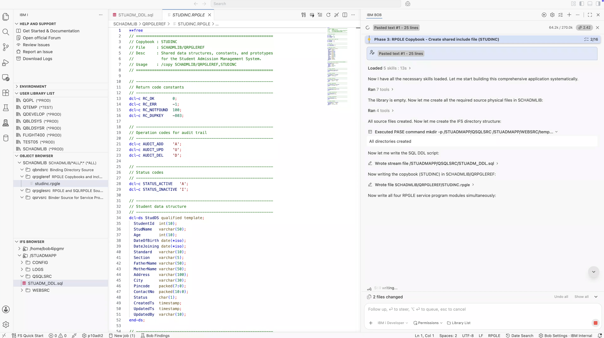

IBM Bob · Premium Package for i (PPI) · IBM i Developer Mode
The application I had in mind was a Student Admission Management System. I wanted to build it as a complete application on IBM i, with Db2 for i and RPGLE handling the backend, Python Flask providing the REST API, and HTML, CSS, and JavaScript providing the browser interface.
I also wanted the application to include the kinds of features you would expect in a real admission system, such as adding and updating students, filtering and sorting records, pagination, soft-delete, and CSV export.
The web layer would connect to Db2 for i using the ibm_db_dbi Python driver. I wanted to see how IBM Bob would put all these pieces together and handle the IBM i-specific issues that came up during development.
Before getting into the development, it is worth explaining what made this application possible. The IBM i capabilities I used throughout the application came from Premium Package for i (PPI).
With IBM i Developer Mode active, IBM Bob could work directly with my IBM i environment through Code for IBM i. It was not just generating code for me to copy and run later. IBM Bob could create source members, execute CL commands, run SQL against Db2 for i, read compiler output, work with IFS files, and check the results directly on the system.
With IBM i Developer Mode active, IBM Bob can:
write_memberCRTSRCPF, ADDPFM, CRTSQLRPGI, CRTSRVPGM, CRTBNDDIR, CRTJRN, and STRJRNPFQSYS2 SQL Services to verify objects, query table schemas, and check index definitionsWithout PPI, this would be a text generation exercise. With PPI, IBM Bob becomes a development partner that actually executes the work, catches the errors, and resolves them using knowledge of IBM i internals.
I gave IBM Bob a single detailed prompt with the requirements for the entire application. I described the database schema, RPGLE architecture, Python Flask layer, IFS directory structure, and compilation requirements all in one message.
I also made a few IBM i-specific requirements clear. The SCHADMLIB library already existed on the system, so IBM Bob should not recreate it. All RPGLE and SQLRPGLE source had to be created as QSYS source members inside SCHADMLIB. I also specified that the RPGLE /copy directives should use QSYS member syntax rather than IFS paths. You can read the full prompt here.

I was curious to see what IBM Bob would do with a prompt this long. Would it ask me to break the work into smaller pieces? Would it start with the database and wait for the next instruction? It did neither. IBM Bob first activated five IBM i Skills and then created a structured plan for the application.
Before starting the build, IBM Bob first checked the current state of SCHADMLIB using the QSYS2.OBJECT_STATISTICS SQL Service. It confirmed that the library was empty and then created a structured plan for the application.

What I liked about the plan was that IBM Bob put the steps in the right order. There were dependencies between several parts of the application, and those dependencies mattered on IBM i:
STUDINC) must exist before any SQLRPGLE module can be compiled, because all four modules reference it via /copy SCHADMLIB/QRPGLEREF,STUDINC
IBM Bob tracked every phase using the update_todo_list tool throughout the session, marking items complete as each phase succeeded and keeping the remaining work visible. It is a small detail, but it meant the entire build state was always clear throughout the session.
One of the things I wanted to understand during this build was how IBM Bob would use the IBM i Skills provided through Premium Package for i (PPI). IBM i Skills provide IBM i-specific knowledge that IBM Bob can use when working on a particular task. For this application, IBM Bob activated five Skills before generating the backend source:
| Skill Activated | Used For |
|---|---|
| rpg-primer-basics | Foundational IBM i RPG conventions — ctl-opt options, date formats, option flags |
| rpg-ile-understanding | ILE concepts — module/service program architecture, activation groups, binding directories |
| rpg-free-format-fundamentals | Fully free-format **free syntax, dcl-proc/end-proc, dcl-pi/end-pi |
| rpg-procedures-functions | Exported procedure definitions, return types, likeds parameters, const qualifiers |
| rpg-embedded-sql | SQLSTATE checking, GET DIAGNOSTICS ROW_COUNT, host variables, EXEC SQL in free-format RPG |

I found the combination interesting. IBM Bob did not just load the RPG Skills. It also activated the embedded SQL Skill because the backend used SQLRPGLE modules. It also needed the ILE and procedure Skills because those modules would eventually become part of a service program. That gave me a good indication that IBM Bob was looking at the application as a whole and selecting the IBM i knowledge it needed before starting the actual code generation.
The first step was setting up the places where the application source would live. IBM Bob created four source physical files in SCHADMLIB using the CRTSRCPF CL command. These source physical files had different roles. QRPGLESRC was for the RPGLE and SQLRPGLE source members, QRPGLEREF was for the copybook, QSRVSRC was for the service program binder source, and QBNDSRC was for the binding directory definition.

IBM Bob then created the IFS directory structure for the web application using a single PASE shell command:
mkdir -p /STUADMAPP/QSQLSRC \
/STUADMAPP/WEBSRC/templates \
/STUADMAPP/WEBSRC/static/css \
/STUADMAPP/WEBSRC/static/js \
/STUADMAPP/LOGS \
/STUADMAPP/CONFIG
At this point, the application had two separate areas on IBM i. SCHADMLIB in QSYS was being used for the IBM i source and objects, while /STUADMAPP on the IFS was used for the Python, HTML, CSS, JavaScript, and SQL files. I liked this separation because it made the structure of the application clear from the beginning. The IBM i source stayed in QSYS, while the web and open-system files stayed on the IFS.
The database design was more than just creating a table. The STUDENTS table needed an identity column for the student ID, validation rules for the pincode and contact number, a status field defaulting to 'A', and timestamps for tracking changes. I also needed a separate audit table to record changes to student records.
IBM Bob created the DDL script in /STUADMAPP/QSQLSRC/STUADM_DDL.sql and started executing it. This is where the session got interesting — three consecutive DDL execution attempts failed, each for a different IBM i-specific reason, and IBM Bob worked through all three systematically.

CREATE TABLE attempt included RCDFMT STUDENTSF alongside GENERATED ALWAYS AS IDENTITY. Db2 for i does not allow these together.
IBM Bob's immediate response was to remove RCDFMT entirely. That is the correct fix — the record format name clause is a legacy DDS-era feature and has no meaningful role in SQL-created tables.
SQL0574 — column attribute not valid. The identity column options included NO MAXVALUE NO CYCLE NO ORDER CACHE 20. The NO ORDER keyword is not recognized by Db2 for i.
IBM Bob simplified the identity options down to the minimum that Db2 for i actually supports: (START WITH 1 INCREMENT BY 1). Clean, correct, no platform-specific keywords.
SQL0574 persisted. The root cause turned out to be the job CCSID. The PASE job running the SQL had CCSID 65535 — a hex CCSID that cannot translate SQL special register names like DEFAULT USER.
This is one of those IBM i issues that is genuinely tricky to diagnose. DEFAULT USER works perfectly in an interactive SQL session or in an RPG embedded SQL statement. But when the job CCSID is 65535, the SQL precompiler cannot resolve the special register name, and you get SQL0574 with no obvious clue about what is wrong.
IBM Bob resolved this in two ways. For the DDL, it replaced DEFAULT USER with DEFAULT 'SYSTEM', which the CCSID 65535 job can handle without issue. For executing the DDL, it switched from the direct execute_sql_statement tool to a Python ibm_db_dbi script using a local connection — ibm_db_dbi.connect() with no arguments creates a connection that runs in a standard CCSID context rather than inheriting the PASE job's CCSID.
- UPDATED_BY VARCHAR(10) NOT NULL - DEFAULT USER,
+ UPDATED_BY VARCHAR(10) NOT NULL + DEFAULT 'SYSTEM',
The actual user value is set explicitly at DML time in every INSERT and UPDATE statement — UPDATED_BY = ? passed as a parameter from the application layer. The column default of 'SYSTEM' is only a safety fallback. This is actually a cleaner design, because it means the audit column is always populated by the application's known user context rather than a database-level special register.
SCHADMLIB.STUDENTS (17 columns, identity PK, 3 CHECK constraints) and SCHADMLIB.STUD_AUDIT (6 columns) — both created. Three indexes added: on STATUS, on STANDARD/SECTION, and on STUD_NAME.
Before any module could be written, IBM Bob created the shared copybook in SCHADMLIB/QRPGLEREF as member STUDINC. The copybook is the backbone of the entire backend — it defines the StudDS data structure (all 17 table columns mapped to RPG variables), the ResultDS return structure, constants for return codes and audit operation types, and forward prototypes for all eight exported procedures.
Every module uses /copy SCHADMLIB/QRPGLEREF,STUDINC — the QSYS member syntax that the prompt specifically required. IBM Bob used that syntax consistently throughout all four modules without deviation.

Every exported procedure returns a ResultDS data structure. This is a deliberate architectural decision. Instead of checking SQLSTATE in the calling program, the caller simply checks result.ReturnCode. The module handles all the SQL error checking internally and populates the result with a human-readable message and the raw SQLCODE/SQLSTATE for logging. It is a clean pattern that scales — the Python layer, when it calls through to this service program in future, gets a consistent interface regardless of which operation failed.
| Module | Source Member | Exported Procedures | Key Logic |
|---|---|---|---|
STUINSERT |
QRPGLESRC/STUINSERT |
AddStudent, ValidatePincode, ValidateContact, WriteAudit |
Validates pincode and contact, inserts with IDENTITY_VAL_LOCAL(), writes to STUD_AUDIT on success |
STUSELECT |
QRPGLESRC/STUSELECT |
GetStudent, GetStudents |
Single-row SELECT INTO; multi-row count with token-based filter parsing (NAME:, STD:, SEC:) |
STUUPDATE |
QRPGLESRC/STUUPDATE |
UpdateStudent |
Re-validates all fields, uses GET DIAGNOSTICS ROW_COUNT to detect zero-match updates |
STUDELETE |
QRPGLESRC/STUDELETE |
DeleteStudent |
Two-step: confirms active record exists first, then UPDATE STATUS = 'I' — no physical DELETE ever runs |
The soft-delete pattern in STUDELETE is worth highlighting because IBM Bob implemented it with the right two-step approach. It first does a SELECT STUD_NAME INTO :studName FROM STUDENTS WHERE STUDENT_ID = :pStudentId AND STATUS = 'A'. If that returns SQLCODE = +100 (not found or already inactive), it returns RC_NOTFOUND immediately without touching the data. Only if the record is confirmed active does it proceed with the status update. The audit write then captures the student's name in the log before that information is no longer easily retrievable.

IBM Bob initially wrote the binder source with mixed-case export symbols: EXPORT SYMBOL('AddStudent'). It then used DSPMOD MODULE(SCHADMLIB/STUINSERT) to inspect the actual exported symbol names from the compiled module. What came back was ADDSTUDENT, not AddStudent.
dcl-proc is declared with export and no explicit extproc qualifier, the compiler exports the symbol in uppercase. This is different from the mixed-case behavior you get with extproc(*dclcase). The binder source symbols must match the compiled export exactly, including case. Unquoted symbols in binder source are uppercased by the binder. Quoted symbols preserve case. The combination that actually works here is uppercase quoted strings.
- EXPORT SYMBOL('AddStudent') - EXPORT SYMBOL('GetStudent') - EXPORT SYMBOL('UpdateStudent')
+ EXPORT SYMBOL('ADDSTUDENT') + EXPORT SYMBOL('GETSTUDENT') + EXPORT SYMBOL('UPDATESTUDENT')
With all source members in place and the binder source corrected, IBM Bob compiled each module using CRTSQLRPGI with OBJTYPE(*MODULE). The DFTRDBCOL(SCHADMLIB) parameter is important here — it tells the SQL precompiler to use SCHADMLIB as the default collection for unqualified SQL table references, which means FROM STUDENTS in the RPGLE source correctly resolves to SCHADMLIB.STUDENTS at compile time.
STUINSERT · STUSELECT · STUUPDATE · STUDELETE — all compiled clean. Zero errors, zero warnings.

With all four modules compiled, IBM Bob created the STUDSRVP service program and bound the four modules together. The service program exposes eight procedures: ADDSTUDENT, GETSTUDENT, GETSTUDENTS, UPDATESTUDENT, DELETESTUDENT, VALIDATEPINCODE, VALIDATECONTACT, and WRITEAUDIT. The signature string STUADM_V1R0M0 is the versioning hook — if I add new procedures in the future, they can be added at the end of the binder source while keeping the existing interface compatible with programs that are already using the service program.

The ACTGRP(*CALLER) setting means the service program runs in its caller's activation group rather than creating its own. For this application, where the service program is called from Python via a SQL stored procedure or directly via XMLSERVICE, this is the right setting — it avoids creating unnecessary activation groups and keeps resource management straightforward.
After the database tables were created and the RPGLE backend was compiled, IBM Bob tried to insert sample data using the Python ibm_db_dbi driver. The first INSERT failed with SQL0-7008 — a file not journaled for commitment control error.
This one catches developers who are new to Db2 for i. When you connect through ODBC or ibm_db_dbi, the driver typically uses connection-level commitment control. Db2 for i requires tables to be enrolled in a journal before they can participate in committed transactions. Tables created via DDL exist in the database but are not automatically journaled — you have to enroll them explicitly.
IBM Bob first checked whether a journal already existed in SCHADMLIB using WRKOBJ OBJ(SCHADMLIB/*ALL) OBJTYPE(*JRN). There was none. It then created the full journal infrastructure in sequence:
QSYS/CRTJRNRCV JRNRCV(SCHADMLIB/SCHADMRCV)
THRESHOLD(100000)
TEXT('Student Admission Journal Receiver')
AUT(*EXCLUDE)
QSYS/CRTJRN JRN(SCHADMLIB/SCHADMJRN)
JRNRCV(SCHADMLIB/SCHADMRCV)
MNGRCV(*SYSTEM) DLTRCV(*YES)
TEXT('Student Admission Journal')
AUT(*EXCLUDE)
QSYS/STRJRNPF FILE(SCHADMLIB/STUDENTS SCHADMLIB/STUD_AUDIT)
JRN(SCHADMLIB/SCHADMJRN)
MNGRCV(*SYSTEM) so IBM i manages journal receiver chaining automatically, and DLTRCV(*YES) to allow automatic deletion of detached receivers once they are no longer needed. For a development environment, this keeps the journal from consuming disk space indefinitely. In production, you would typically want to manage receiver retention policy more explicitly.
After journaling was in place, IBM Bob loaded 10 sample students using the Python ibm_db_dbi driver. Seven inserted successfully on the first attempt. Three did not. The error was not a CHECK constraint violation — the pincode and contact values were correct. The root cause was a Python driver behavior specific to this IBM i environment.
When passing large integer values (specifically CONTACT_NO = 9876543210) through Python's ? parameterized query binding, the ibm_db_dbi driver failed to map the Python int to NUMERIC(10,0). The same values worked perfectly when passed as literal strings.
- ('Priya Patel', 12, ..., - 4110001, 9123456780) - # pincode=int, contact=int - # → driver type mapping fails
+ ('Priya Patel', 12, ..., + '4110001', '9123456780') + # pincode=str, contact=str + # → Db2 casts string → NUMERIC
IBM Bob also patched app.py to use the same string-passing approach for the Flask API endpoints — so the production INSERT and UPDATE operations would work correctly for all users. A small fix, but an important one to get right before the application goes live.
With the database layer solid and the RPGLE backend compiled, IBM Bob built the entire web tier simultaneously. Four write_stream_file calls went out in parallel: db.py, requirements.txt, config.py, and app.py. These landed in /STUADMAPP/WEBSRC on the IFS.
| Method | Endpoint | What It Does |
|---|---|---|
POST | /api/students | Validate → INSERT → IDENTITY_VAL_LOCAL() → audit → return new ID |
GET | /api/students | Filter by name/standard/section/status + LIMIT/OFFSET pagination → JSON |
GET | /api/students/<id> | Single student row → JSON with serialized dates |
PUT | /api/students/<id> | Validate → UPDATE → rowcount check → audit → return result |
DELETE | /api/students/<id> | Confirm active → UPDATE STATUS='I' → audit → no physical delete |
GET | /api/stats | Total / active / inactive counts + GROUP BY STANDARD for dashboard |
The _validate_student helper function in app.py mirrors the RPGLE validation logic — same pincode range check, same contact number range check, same date format requirement. Dual validation is intentional: client-side JavaScript catches format errors before the request is sent; server-side Python validates again before touching the database; and the database CHECK constraints act as a final guard. A record that violates the constraints cannot be inserted regardless of how the request was constructed.

The database connection uses ibm_db_dbi.connect() with no arguments. This is the same local connection pattern that worked reliably during the DDL execution. The fetchall_dict helper converts the cursor rows into dictionaries using the column names from cursor.description. This makes it easier for the API endpoints to return the database results as JSON.

The student form template (student_form.html) is shared between Add and Edit operations. Flask passes a MODE value, either add or edit, and for edit operations it also passes the STUDENT_ID. The JavaScript uses these values to decide which API endpoint to call when the form is submitted. For a new student, it calls POST /api/students. For an existing student, it calls PUT /api/students/<id>. I liked this approach because there is only one form to maintain instead of having two almost identical templates.

The student_form.js file drives the form validation using a field definition map (FIELDS) that describes each field's type and constraints. The validation logic covers required fields, age range, date format, pincode regex (/^\d{7}$/), and contact regex (/^\d{10}$/). Inline red error messages appear next to each field without a page reload.
The student list page (students_list.js) includes client-side column sorting on the cached data, filter parameter building with URLSearchParams, and a CSV export that generates a downloadable file directly in the browser from the current page's data — no server round-trip needed for the export.
After resolving the DDL CCSID issues, the journaling requirement, the binder symbol case problem, and the Python driver numeric parameter behavior, the full build reached completion.

Once Flask was started with python3 -m flask run --host=0.0.0.0 --port=5000, the application was accessible from a browser at http://p10adt2.rch.stglabs.ibm.com:5000/.


The table below compares the time I would typically expect to spend developing this application manually with the time it took using IBM i Developer Mode in IBM Bob Premium Package for i (PPI).
| Task | Manually | With IBM i Developer Mode |
|---|---|---|
| QSYS source physical files + IFS directory structure | 30 min | ~2 minutes |
| SQL DDL — table, indexes, audit table, labels, grants | 2–3 hours | ~8 minutes (including 3 DDL fix cycles) |
| Journal setup (receiver, journal, STRJRNPF) | 20 min | Included — IBM Bob identified the need from the SQL0-7008 error |
| RPGLE copybook + 4 SQLRPGLE service modules | 2–3 days | ~20 minutes |
| Binder source + CRTSRVPGM + CRTBNDDIR | 1–2 hours | ~5 minutes (including binder symbol case fix) |
| Python Flask app (5 REST endpoints, validation, audit) | 1–2 days | ~15 minutes |
| HTML templates (4 files), CSS, JavaScript (3 files) | 2–3 days | ~15 minutes |
| Diagnosing CCSID 65535, journaling, driver numeric issue | 1–2 days | ~20 minutes across all fix cycles |
| Total estimated | ~2–3 weeks | < 2 hours |
The troubleshooting time stands out most. CCSID 65535 blocking DEFAULT USER, tables requiring journaling before DML, and the Python driver's numeric parameter handling for large integers — these are all real IBM i platform behaviors that are not well-documented in one place. Finding and resolving them manually would typically involve reading multiple IBM documentation pages, Stack Overflow threads, and forum posts across multiple sessions. IBM Bob diagnosed and fixed all three in the same session they appeared, without interrupting the build flow.
A full walkthrough of the Student Admission Management System running live on IBM i, built using IBM i Developer Mode in IBM Bob Premium Package for i (PPI).
If you want to try IBM Bob and IBM Bob Premium Package for i (PPI) yourself, here are the resources to get started: